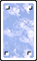

|
Az akutális színt jelenti.
 Színtulajdonságok:
Metaszín, azaz csak kártyának lehet ilyen színe, aktuális szín nem lehet. Pontosabban
az ilyen színû kártyák valójában szín nélküliek.
Színtulajdonságok:
Metaszín, azaz csak kártyának lehet ilyen színe, aktuális szín nem lehet. Pontosabban
az ilyen színû kártyák valójában szín nélküliek.
ÉgSzínû lap lerakásakor hasonul az alatta lévõ kártya színéhez
(azaz az aktuális színt veszi fel). A kártyalerakást úgy kell tekinteni, mintha egy újabb, az aktuális
színnel megegyezõ színû kártyát raktak volna le.
ÉgSzínû lap bármilyen színû lapra rátehetõ, ha a színbeli illeszkedés megengedett. Ti. ha
az aktuális jelzés  vagy vagy  tulajdonságú, akkor a kérést kell figyelembe venni: ilyenkor az ÉgSzínû kártya akkor rakható le, ha (a hasonult színnel) megfelel
a kérésnek vagy felül tudja bírálni azt. tulajdonságú, akkor a kérést kell figyelembe venni: ilyenkor az ÉgSzínû kártya akkor rakható le, ha (a hasonult színnel) megfelel
a kérésnek vagy felül tudja bírálni azt.
Ha kimaradás / kötelezõ húzás van érvényben, az ÉgSzínû kártya csak akkor rakható le,
ha a kártya jelzése vagy az aktuális szín  tulajdonságú, s ilyenkor halmozásnak számít (ha az aktuális szín
tulajdonságú, s ilyenkor halmozásnak számít (ha az aktuális szín  , akkor vétózásnak). , akkor vétózásnak).
Jelzésbeli megfelelõje az  metajelzés. metajelzés.
|
|

 Bevezetõ |
Bevezetõ |
 Szabályok |
Szabályok |
 Súgó |
Súgó |
 Paklik
Paklik